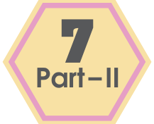
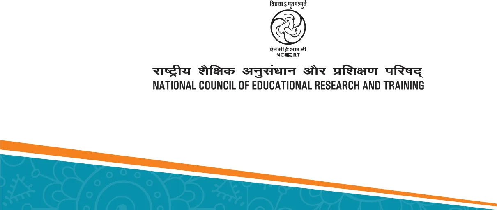
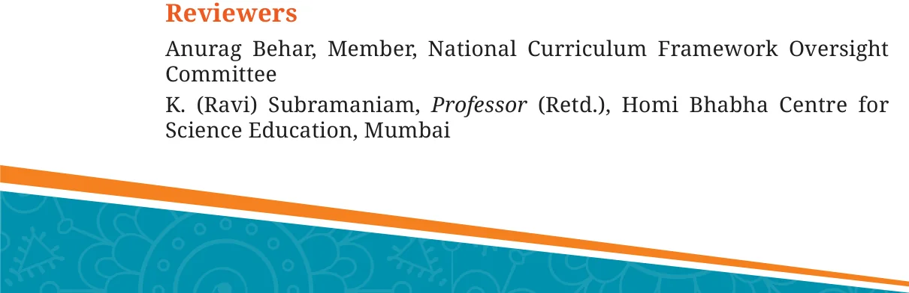

GANITA PRAKASH
Textbook of Mathematics
Grade


\(0789 -\) GTextbook of Mathematics for Grade 7anita Prakash, Part II ISBN 978-93-5729-156-9
First Edition ALL RIGHTS RESERVED
October 2025 Kartika 1947 • No part of this publication may be reproduced, stored in a retrieval system or transmitted, in any form or by any means, electronic, mechanical, photocopying, recording or otherwise without the prior permission of the publisher. • This book is sold subject to the condition that it shall not, by way of trade, be lent, re-sold, hired out or otherwise disposed of without the publisher’s PD 2500T BS consent, in any form of binding or cover other than that in which it is published.
• The correct price of this publication is the price printed on this page, Any revised price indicated by a rubber stamp or by a sticker or by any other means is incorrect and should be unacceptable.
© National Council of Educational Research and Training, 2025
OFFICES OF THE PUBLICATION DIVISION, NCERT
NCERT Campus Sri Aurobindo Marg
New Delhi 110 016 Phone : 011-26562708
108, 100 Feet Road Hosdakere Halli Extension Banashankari III Stage
Bangaluru 560 085 Phone : 080-26725740
Navjivan Trust Building P.O.Navjivan
Ahmedabad 380 014 Phone : 079-27541446
CWC Campus Opp. Dhankal Bus Stop Panihati
Kolkata 700 114 Phone : 033-25530454
CWC Complex Maligaon
₹65.00
Guwahati 781 021 Phone : 0361-2674869
Publication Team
Head, Publication : M.V. Srinivasan Division
Chief Editor : Bijnan Sutar Chief Business : Amitabh Kumar Manager
Chief Production : Deepak Jaiswal Printed on 80 GSM paper with NCERT Officer (In charge) watermark Production Officer : Sunil Sharma
Published at the Publication Division by the Secretary, National Council of Cover and Illustrations Educational Research and Training, Chetan Sharma, Madhusree Basu, Sri Aurobindo Marg, New Delhi 110 016 and Ritika B and printed at Chandra Prabhu Offset Printing Works (P) Ltd., C-40, Sector-8, Layout Noida 201 301 (UP) Creative Art Studio
FOREWORD
The National Education Policy 2020 envisages a system of education in the country that is rooted in an Indian ethos and its civilisational accomplishments in all fields of knowledge and human endeavour. At the same time, it aims to prepare students to engage constructively with the opportunities and challenges of the 21st century. The basis for this aspirational vision has been well laid out by the National Curriculum Framework for School Education (NCF-SE) 2023 across curricular areas at all stages. By nurturing students’ inherent abilities across all five planes of human existence (pañchakośhas), the Foundational and Preparatory Stages set the stage for further learning at Middle Stage. Spanning from Grades 6 to 8, the Middle Stage serves as a critical three- year bridge between the Preparatory and Secondary Stages. For the Middle Stage, NCF-SE 2023 aims to equip students with the skills needed to grow, as they advance in their lives. It endeavours to enhance their analytical, descriptive, and narrative capabilities, and to prepare them for the challenges and opportunities that await them. A diverse curriculum, covering nine subjects ranging from three languages - including at least two languages native to India - to Science, Mathematics, Social Science, Art Education, Physical Education and Well-being, and Vocational Education promotes their holistic development. Such a transformative learning culture requires certain essential conditions. One of them is to have appropriate textbooks in different curricular areas, as these textbooks will play a central role in mediating between content and pedagogy \(- a\) role that will strike a judicious balance between direct instruction and opportunities for exploration and inquiry. Among the other conditions, classroom arrangement and teacher preparation are crucial to establish conceptual connections both within and across curricular areas. The National Council of Educational Research and Training, on its part, is committed to providing students with such high-quality textbooks. Various Curricular Area Groups, constituted for this purpose, comprising notable subject-experts, pedagogues, and practising teachers as their members, have made all possible efforts to develop such textbooks. Ganita Prakash the textbook of Mathematics for Grade 7, Part II; aligns with the expectations of NEP 2020 and NCF-SE 2023, in respect of creating a spark for initiating mathematical thinking. This textbook designed for Grade 7 students, takes forward its journey through the world of mathematics that started in Grade 6. While Part-I set the journey recapitulating Grade 6 Mathematics, Part-II takes an advanced path on mathematical concepts and prepares students for
Grade 8. During this journey the concepts and problems emerge from daily life situations and so it is expected that students will be able to relate to them with ease. This textbook makes efforts to encourage the students to observe and explore the patterns around them and discover mathematical concepts on their own. The content attempts to integrate mathematics with other subject areas such as science, social science with cross-cutting themes like environmental education, value education, inclusive education, and Indian Knowledge Systems (IKS). Colourful illustrations and interactive exercises form the basis of this textbook that would develop a strong foundation among children in understanding more complex mathematical concepts. Throughout the book, stories, conversations and anecdotes have been incorporated to make abstract mathematical concepts more relatable and accessible to young learners. Puzzles and innovative problems will not only engage the students in thoughtfully relating the mathematical concepts to the world around them and help them in deepening their understanding of mathematics, but also prepare them to understand the concepts of the emerging field of computational thinking. The focus is on collaboration and active engagement through student-centered approach to education. However, in addition to this textbook, students at this stage should be encouraged to explore various other learning resources. School libraries play a crucial role in making such resources available. Besides, the role of parents and teachers will also be invaluable in guiding and encouraging students to do so. With this, I express my gratitude to all those who have been involved in the development of this textbook and hope that it will meet the expectations of all stakeholders. At the same time, I also invite suggestions and feedback from all its users for further improvement in the coming years.
Dinesh Prasad Saklani Director New Delhi National Council of Educational September, 2025 Research and Training
ABOUT THE BOOK
Mathematics helps students develop not only basic arithmetic skills, but also the crucial capacities of logical reasoning, creative problem solving, and clear and precise communication (both oral and written). Mathematical knowledge also plays a crucial role in understanding concepts in other school subjects, such as Science and Social Science, and even Arts, Physical Education, and Vocational Education. Learning Mathematics can also contribute to the development of capacities for making informed choices and decisions. Understanding numbers and quantitative arguments is necessary for effective and meaningful democratic and economic participation. Mathematics thus has an important role to play in achieving the overall aims of school education. Mathematics at the Middle Stage is a major challenge and has to perform the dual role of being both close to the experience and environment of the child and being abstract. It must perform the dual role of developing intuition while also maintaining and emphasising rigour. It must perform the dual role of enhancing critical and logical thinking while also developing artistry and creativity and a sense of elegance and aesthetics. Finally, Mathematics must perform the dual role of providing students plenty of opportunities for exploration and discovery of concepts on their own while also teaching best-known methods in the global repertoire of mathematics. The present textbook has made an attempt to address the above mentioned goals and challenges of learning mathematics. The writers of this book have aimed to strike a judicious balance between informal and formal definitions and methods to develop in students both intuition and rigour. The book also provides numerous opportunities for student-student and student - teacher interaction in the classroom to promote active and experiential learning. A number of questions, puzzles, and interactive exercises are posed throughout the book to encourage constant exploration. Many of the questions are open-ended to stimulate in-class discussion. Chapter 1 of this textbook, ‘Geometric Twins’, introduces the concept of congruence of plane figures. Chapter 2, ‘Integers - Multiplication and Division’ is about how to multiply and divide positive and negative integers. Chapter 3, ‘Finding Common Ground’, deals with the ideas of common factors, common multiples, prime factorisation, HCF and LCM. Chapter 4, ‘Decimals - Multiplication and Division’ is about learning how to handle decimal numbers in practical and systematic way. It builds on earlier knowledge of decimals and extends it to
operations. Chapter 5, ‘Connecting the Dots’, introduces the concept of central tendency (mean, median and mode). Chapter 6, ‘Constructions and Tilings’, introduces children to practical geometry and patterns in shapes. Chapter 7, ‘Finding the Unknown’, is about algebra and simple equations. It introduces children to the idea that we can use letters (like x, y) and then find their value using rules of arithmetic. In all chapters, an attempt has been made to emphasis connections with other subjects including Art, History, and Science. By weaving storytelling and hands-on activities together, we hope that an immersive learning experience will be created that ignites curiosity and fosters a love for mathematics. It is hoped that teachers would give children the opportunity to discuss, play, engage with each other, provide logical arguments for different ideas, and find loopholes in arguments presented. This is necessary for the learners to eventually develop the ability to understand what it means to prove something and also become confident about underlying concepts. The mathematics classroom should not expect a blind application of algorithms but should rather encourage children to find many different ways to solve problems. As per the NEP 2020, computational thinking has also been gently introduced through puzzles, games, and interactive exercises that encourage such thinking. Indian rootedness has also been kept in mind while giving contexts for different concepts. The contributions of Indian mathematicians have been given as part of a problem-solving approach to make students aware of India’s rich mathematical heritage and its global contributions to mathematics. The concepts and problems are related to daily life situations. An attempt has been made to use contexts and materials with which the students are familiar. Learning material sheets have been given at the back of the book that may be photocopied and used. At many places, exercises or activities are given to encourage peer group efforts and discussions. This textbook intends to address the learning needs of a diverse group of students in the classroom. We have tried to link concepts learnt in initial chapters with ideas in subsequent chapters to show the connectedness and unity of mathematics. We hope that teachers will use this as an opportunity to revise these concepts in a spiralling way so that children are able to appreciate the entire conceptual structure of mathematics. We hope that teachers may give more time to the ideas of congruence of triangles, concept of central tendencies and other notions that are new to students. Many of these are the basis for further learning in mathematics.
Finally, this textbook aims to be more than just a textbook - it’s a passport to a world of mathematical discovery and exploration. Whether used in the classroom or at home, we hope that it may inspire students to embark on their own mathematical adventures, empowering them to see the beauty and relevance of mathematics in everything around them. With its engaging approach and comprehensive coverage of Grade 7 mathematics concepts, this textbook hopes and aims to captivate young minds and set them on a lifelong journey of mathematical discovery. I thank again all the writers and contributors of this textbook for their important and valuable contribution and service to the nation’s mathematics teachers, learners and enthusiasts. We look forward to your comments and suggestions regarding the book and hope that you will send interesting exercises, activities and tasks that you develop during the course of teaching and learning, to be included in future editions.
Ashutosh Wazalwar Professor and Academic Convener Department of Education in Science and Mathematics National Council of Educational Research and Training
NATIONAL SYLLABUS AND TEACHING LEARNING MATERIAL COMMITTEE (NSTC)
- M.C. Pant, Chancellor, National Institute of Educational Planning and Administration (NIEPA), (Chairperson)
- Manjul Bhargava, Professor, Princeton University, (Co-Chairperson)
- Sudha Murty, Acclaimed Writer and Educationist
- Bibek Debroy, Chairperson, Economic Advisory Council to the Prime Minister (EAC - PM)
- Shekhar Mande, Former Director General, CSIR; Distinguished Professor, Savitribai Phule Pune University, Pune
- Sujatha Ramdorai, Professor, University of British Columbia, Canada
- Shankar Mahadevan, Music Maestro, Mumbai
- U. Vimal Kumar, Director, Prakash Padukone Badminton Academy, Bengaluru
- Michel Danino, Visiting Professor, \(IIT -\) Gandhinagar
- Surina Rajan, IAS (Retd.), Haryana, Former Director General, HIPA
- Chamu Krishna Shastri, Chairperson, Bharatiya Bhasha Samiti, Ministry of Education
- Sanjeev Sanyal, Member, Economic Advisory Council to the Prime Minister (EAC - PM)
- M.D. Srinivas, Chairperson, Centre for Policy Studies, Chennai
- Gajanan Londhe, Head, Programme Office
- Rabin Chhetri, Director, SCERT, Sikkim
- Pratyusa Kumar Mandal, Professor, Department of Education in Social Sciences, NCERT, New Delhi
- Dinesh Kumar, Professor, Department of Education in Science and Mathematics, NCERT, New Delhi
- Kirti Kapur, Professor, Department of Education in Languages, NCERT, New Delhi
- Ranjana Arora, Professor and Head, Department of Curriculum Studies and Development, NCERT (Member-Secretary)
TEXTBOOK DEVELOPMENT TEAM
Contributors
Aaloka Kanhere, Project Scientific Officer, Homi Bhabha Center for Science Education, Mumbai Amartya Kumar Dutta, Professor, Stat-Math Unit, Indian Statistical Institute (ISI), Kolkata Anjali Gupte, Principal (Retd.), Vidya Bhavan Public school, Udaipur Aparna Lalingakar, Director, Aksharbrahma Consultancy, Pune - Team Leader Ashutosh Kedarnath Wazalwar, Professor, Department of Education in Science and Mathematics, NCERT, New Delhi \(- CAG\) (Mathematics)
Member Coordinator
Geetanjali Phatak, Professor, S. P. College, Pune H. S. Sharada, TGT, Government High School, HD Kote, Karnataka Ishita Mukherjee, Resource Person, CBSE, Delhi Jaspal Kaur, TGT (Maths), School of Excellence, Delhi K. V. Subrahmanyam, Professor, Chennai Mathematical Institute (CMI), Chennai Kiran Barve, Faculty, Bhaskaryacharya Partisthan, Pune Madhavan Mukund, Director, Chennai Mathematical Institute, Chennai -
CAG Chairperson (Mathematics)
Madhu B., Assistant Professor, Regional Institute of Education (RIE), Mysuru Manjul Bhargava, Professor, Princeton University; and Co-Chairperson, NSTC Padmapriya Shirali, Former Principal, Sahyadri School KFI, Pune Patanjali Sharma, Assistant Professor, Regional Institute of Education, (RIE), Ajmer Rakhi Bannerjee, Associate Professor, Azim Premji University, Bengaluru Ramchandar Krishnamurthy, Principal, Azim Premji School, Bengaluru Shivkumar K. M., Senior Consultant, Programme Office, NSTC Shravan S. K., Senior Consultant, Programme Office, NSTC Sujatha Ramdorai, Professor, University of British Columbia, Canada; Member, NSTC V.M. Sholapurkar, Assistant Professor, Bhaskaryacharya Pratisthan, Pune Vijayan K., Professor, Department of Curriculum Studies and Development, NCERT, New Delhi

CONSTITUTION OF INDIA
Part III (Articles \(12 - 35)\)
(Subject to certain conditions, some exceptions and reasonable restrictions)
guarantees these
Fundamental Rights
Right to Equality
• before law and equal protection of laws; • irrespective of religion, race, caste, sex or place of birth; • of opportunity in public employment; • by abolition of untouchability and titles.
Right to Freedom
• of expression, assembly, association, movement, residence and profession; • of certain protections in respect of conviction for offences; • of protection of life and personal liberty; • of free and compulsory education for children between the age of six and fourteen years; • of protection against arrest and detention in certain cases.
Right against Exploitation
• for prohibition of traffic in human beings and forced labour; • for prohibition of employment of children in hazardous jobs.
Right to Freedom of Religion
• freedom of conscience and free profession, practice and propagation of religion; • freedom to manage religious affairs; • freedom as to payment of taxes for promotion of any particular religion; • freedom as to attendance at religious instruction or religious worship in certain educational institutions.
Cultural and Educational Rights
• for protection of interests of minorities; • for minorities to establish and administer educational institutions; • saving of certain Laws \(31A - 31D\).
Right to Constitutional Remedies
• by issuance of directions or orders or writs by the Supreme Court and High Courts for enforcement of these Fundamental Rights.
ACKNOWLEDGEMENTS
The National Council of Educational Research and Training (NCERT) acknowledges the guidance and support of the esteemed Chairperson and members of the Curricular Area Group (CAG): Mathematics and other concerned CAGs for their guidelines on cross-cutting themes in developing this textbook. During the development of this textbook, various workshops were organised and subject experts from different institutions were invited. The NCERT acknowledges the valuable views and inputs given by subject experts - Manjunath Krishnapur, Associate Professor, Indian Institute of Science, Bengaluru; Kavita Patil More, TGT Mathematics, Samata International School, Kokamthan; Sreelatha Iyengar, TGT Mathematics, Bengaluru; Adarshveer Bhardwaj, Assistant Teacher, GUPS Nagla Koyal, Narsan, Haridwar; Sunita Sharma, TGT Mathematics, The Heritage School, Delhi; Sangeeta Solanki, TGT Mathematics, The Heritage School, Delhi; Nagesh Mone, Principal (Retd.), Deccan Education Society’s Dravid High School, Wai, Maharashtra; Dr. Rishikesh Kumar, Assistant Professor, DESM, NCERT, New Delhi; for improving the content and pedagogy of the textbook. The Council acknowledges the academic and administrative support of Sunita Farkya, Professor and Head, DESM, NCERT, New Delhi. The Council appreciates the contributions of Sushmita Joshi, Senior Research Associate; Nazrana Khan, Senior Research Associate; Asha Kumari, Junior Project Fellow, Department of Education in Science and Mathematics, NCERT, for providing support in the development of this textbook. The page number design was inspired from the Prime Climb game by Math For Love. The Council acknowledges Wikimedia and the individuals for providing access to some of the photos used in the textbook. Inspiration for tangram ideas are drawn from ‘Tangrams: 330 Puzzles’ by Ronald Read. The contribution of Ilma Nasir, Editor (contractual), Publication Division is also appreciated. The efforts of Aastha Sharma, Editorial Assistant (contractual); Adiba Tasneem, Ariba Usman and Talha Faisal Khan, Jatinder Kumar, Proofreaders (contractual), are also recognised. The NCERT gratefully acknowledges the contributions of Pawan Kumar Barriar, In charge, DTP Cell; Vipan Kumar Sharma, Bittu Kumar Mahato, Kishore Singhal and Geeta, DTP Operator (contractual), Publication Division, NCERT for all their efforts.
Constitution of India
Part IV A (Article 51 A)
Fundamental Duties
It shall be the duty of every citizen of India -
- to abide by the Constitution and respect its ideals and institutions, the National Flag and the National Anthem;
- to cherish and follow the noble ideals which inspired our national struggle for freedom;
- to uphold and protect the sovereignty, unity and integrity of India;
- to defend the country and render national service when called upon to do so;
- to promote harmony and the spirit of common brotherhood amongst all the people of India transcending religious, linguistic and regional or sectional diversities; to renounce practices derogatory to the dignity of women;
- to value and preserve the rich heritage of our composite culture;
- to protect and improve the natural environment including forests, lakes, rivers, and wildlife, and to have compassion for living creatures;
- to develop the scientific temper, humanism and the spirit of inquiry and reform;
- to safeguard public property and to abjure violence;
- (j)to strive towards excellence in all spheres of individual and collective activity so that the nation constantly rises to higher levels of endeavour and achievement; *(k) who is a parent or guardian, to provide opportunities for education to his child or, as the case may be, ward between the age of six and fourteen years.
Note: The Article 51A containing Fundamental Duties was inserted by the Constitution (42nd Amendment) Act, 1976 S.11 (with effect from 3 January 1977). *(k) was inserted by the Constitution (86th Amendment) Act, 2002 S.4 (with effect from 1 April 2010).
Note To The Teacher
We hope that this textbook, Ganita Prakash, will serve as a strong support and guide to you in achieving the exciting task that you have before you - that of passing on the joy of learning the beautiful subject of Mathematics to the next generation. This task calls for providing a fertile environment that allows for the flowering of mathematical thinking in the minds of students. Classrooms, where students just listen and write down whatever is being told to them or written on the board, are deficient in the conditions required for learning mathematics. Instead, classrooms need to be places where students are engaged in playing with mathematical concepts, finding and discussing patterns, and developing creative strategies together to solve problems. Students should also be posing problems to each other and discussing possible solutions. In fact, these are the very conditions that have led to the development of the entire field of mathematics so far, and so one cannot expect students to pick up mathematical thinking and understanding without these conditions. Fortunately, it is not difficult to create such conditions in the classroom. It just requires an interesting question, problem, pattern, or challenge to be thrown open to the students on a regular basis, and sufficient time to be given to them to play with, discuss, and work on it as a class or in pairs or groups. Along with it, an environment that accepts mistakes and acknowledges their importance in learning needs to be nurtured. While creating the spark for initiating mathematical thinking in classrooms is not difficult, sustaining it may be challenging and may involve efforts from your side. Nevertheless, even if just the first part of throwing open a question, problem, pattern, or challenge is done at least once or twice a week, accompanied by sufficient waiting time from your side for students to play, discuss, and work on it, it can have a great positive impact on how the students view and approach mathematics. It should be noted that this positive impact will not happen overnight. That takes time and depends on various factors such as the number of opportunities you give for problem solving, your patience, and the encouragement you give to the students. To support you in posing problems, all the problems or questions in this book are marked using the icon . This icon is an indicator of a potential opportunity to start off a process of problem solving and exploration in the classroom. You will find some of the problems
labelled ʻMath Talk’. Such questions can especially be made as topics for classroom discussion. An owl mascot appears at various points in the textbook to highlight important mathematical processes, ways of thinking, and problem-solving approaches. These can be brought out during classroom discussions, both where the owl is present and also in other similar situations. To develop students’ mathematical thinking and understanding of concepts, a sufficient number of problems are given. Trying to ʻcover’ all of them must not happen at the cost of students not getting to spend quality time on playing with and discussing them. It is important to understand that the exploratory problems are not only for promoting problem solving skills, they also serve in strengthening procedural fluency when children start engaging in exploration. Efforts must be made in making students independent learners. One essential aspect required for this is an ability to read and understand mathematical text. To promote this skill, students should be encouraged to read the book by themselves and in groups. Give opportunities to them to interpret what they read and express it to others. This will also address the big problem that students face in speaking mathematics and interpreting word problems. This textbook contains a number of open-ended problems. It also contains new treatments of certain concepts. If you are not able to solve them or follow some of them immediately, it is perfectly okay! Not everyone knows everything. Along with trying to understand and reflect upon such content, it will be very useful to take it to the classroom and open it up for discussion. After the discussion, things that are clear and those that are not yet clear can be clearly summarised. This process itself can throw a lot of light on the content. In these discussions, you can participate as a fellow seeker, and when students see a teacher seek and think to understand something, it sets a wonderful example for them. It is hoped that you and your students will have a great and fruitful time using this textbook!
Summary of Key Points
Time for Exploration
- It is important to routinely pose new problems, questions, patterns, or challenges to the students and give them sufficient time to play with, discuss, and work on them, individually and in groups.
- During this time, an environment that accepts mistakes and acknowledges their importance in learning needs to be nurtured.
- There should be a culture where students pose problems to each other and discuss with each other various ways to approach the problems.
About the Problems in the Book
- The exploratory problems in the textbook not only promote problem solving; they also aim to strengthen procedural fluency when children start engaging in exploration.
- Trying to ʻcover’ all the problems in the book must not happen at the cost of students not getting to spend quality time on playing with, discussing, and solving them.
Reading
- Encourage students to read the book by themselves and in groups.
- Give opportunities to them to interpret what they read and to express it to others.
Right of Not Knowing!
- It is perfectly okay if some of the content is not understood immediately. Along with trying to understand and reflect upon such content, it can also be taken to the classroom and opened up for discussion. After the discussion, things that are clear and those that are not yet clear can be clearly summarised. In these discussions, you can participate as a fellow seeker, and when students see a teacher seek and think to understand something, it sets a wonderful example for them!
- Learning is a continual process. Indeed, there is so much in mathematics that is still not known and requires further exploration!
A NOTE TO STUDENTS!
To be able to appreciate the art of mathematics, it is not enough to just be a passive spectator. You need to immerse yourself in its process like a detective getting into action to solve a mystery. This is especially required when you see a new question or when a question arises from your own sense of wonder, or when you come across a new beautiful pattern. When you encounter these, pause your reading, and use your creativity to work out the question or understand and appreciate the pattern. You will find that some questions are accompanied by their answers. Even if this is the case, it is worthwhile to work on the problems by yourself or in a group before you see the answer. This will enrich your experience of going through the book! Whenever there are questions coming up, you will see this icon: . This indicates that it is time for figuring things out! Sometimes you will find many questions collected together in a single place under the title ‘Figure it Out’.
Some questions are marked . These questions are meant to be discussed and worked out with your friends.
Finally, there are questions marked . These questions demand more creativity to be answered, and therefore will also often be more fun to answer as a result!
CONTENTS
Foreword iii About the Book v Note to the Teacher xiii A Note to Students xvi
Chapter 1
Geometric Twins 1
Chapter 2
Operations with Integers 24
Chapter 3
Finding Common Ground 47
Chapter 4
Another Peek Beyond the Point 67
Chapter 5
Connecting the Dots... 97
Chapter 6
Constructions and Tilings 136
Chapter 7
Finding the Unknown 164 Learning Material Sheets 191